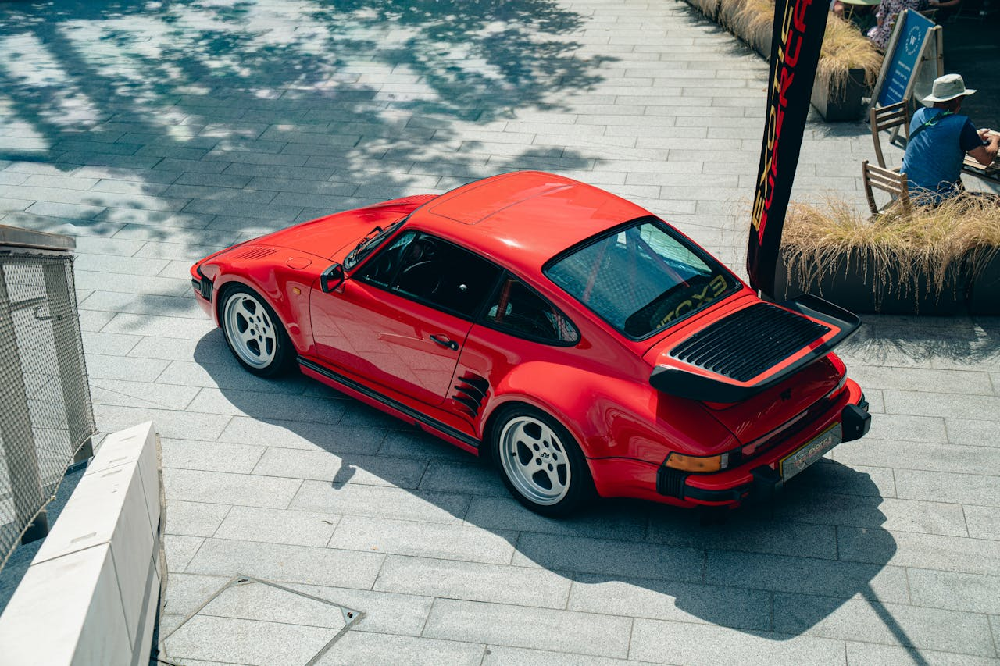
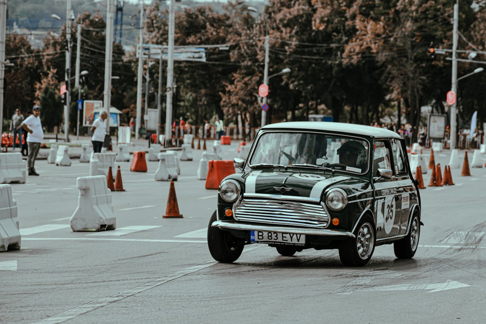
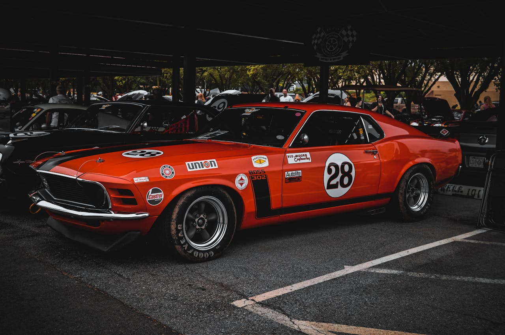

Classic Porsche
Photo by
George Blatchford
| Pexels License (Free to Use)

Classic Mini Cooper
Photo by
Diana
| Pexels License (Free to Use)

Classic Ford Mustang
Photo by
Garret Shields
| Pexels License (Free to Use)